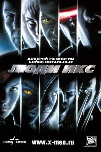

Բարի Գալուստ իմ առաջին էջ
+37498941429
+37491111294
Люди Икс (2000)
Группа сверх-людей под предводительством загадочного Магнето стремится захватить власть и планирует нападение на человечество. Когда-то он был другом профессора Чарльза Ксавьера – могущественного телепата, прикованного к инвалидному креслу. Но поскольку Ксавьер всегда стремился к сохранению мира между людьми и мутантами, их пути разошлись. Теперь Чарльз управляет школой мутантов, и ему помогают Джин Грей, владеющая телепатией и телекинезом, Скотт Саммерс, генерирующий лазерные лучи, и другие мутанты. После того как к ним присоединяются нелюдимый Логан и печальная девушка Мари, начинается война между Ксавьером и Магнето.
В не столь отдаленном будущем люди узнали о существовании мутантов и очень не рады вынужденному соседству с ними. Сверх-силы мутантов пугают людей, и они пытаются оградить себя от общения с ними, но проблема в том, что определить мутации в большинстве случаев можно только в период полового созревания. Социальная напряженность растет, и некоторые мутанты отвечают людям взаимной неприязнью.
Год выпуска: 2000
Страна: США
Жанр: фантастика, боевик,приключени
Перевод: Дублированный
Продолжительность: 01:44:31
Премьера (РФ): 18 июля 2000
Режиссер: Брайан Сингер
В ролях: Хью Джекман, Патрик Стюарт, Иэн МакКеллен, Фамке Янссен, Джеймс Марсден, Холли Берри, Анна Пэкуин, Шон Эшмор, Ребекка Ромейн, Тайлер Мэйн